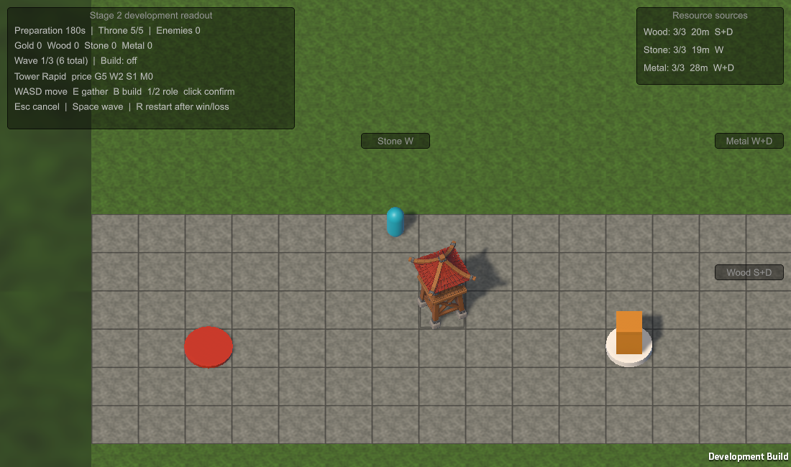

01 / ОЦЕНИТЬ
Угроза
Увидеть трон, направление врагов и начало волны.
Изометрическая tower defense, где герой добывает ресурсы и строит оборону вокруг трона. Башни сдерживают врагов и меняют их путь.
Ближайшая цель — короткая игра, которую можно запустить, понять и пройти. Целевой вид — мягкая мультяшная изометрия по настроению пользовательских TD-карт Dota 2; референсы не копируются. Stage 2 уже принят. Сейчас Stage 3: общая наклонная камера, объёмная вышка на поверхности, читаемые клетки и тени.
Портал и трон находятся рядом в одном углу. От этого угла зелёный мир для исследования и добычи расходится в трёх направлениях. Боевые башни ставятся только на серой зоне вторжения. Текущая играбельная карта 32×32 уже реализует эту композицию; Stage 3 сохраняет её клетки и адаптирует общий вид.
Целевая схема первого играбельного билда. Серый цвет обязателен для строительства боевых башен; проходимость врагов пока задаётся отдельной маской карты.
Оборона и добыча конкурируют за время игрока. Герой не атакует; за бой отвечают башни.
Увидеть трон, направление врагов и начало волны.
Найти дерево, камень и металл; решить, когда возвращаться.
Выбрать роль, оплатить её и разместить на карте.
Башни стреляют и меняют путь; полная блокировка вызывает осаду.
Перестроить оборону, пережить финал или начать новый забег.
Первый играбельный Stage 2 принят игроком. Его цикл сохраняется в Stage 3: уйти за ресурсами, построить защиту трона, завершить волны и перезапустить забег.
По новым примерам игрока: общий вид сверху под углом, квадратная поверхность, видимые основания и тени. Геометрия стоит на земле; ракурс задаёт общая камера.

Игровой пилот D-019. Герой, враги, ресурсы и трон пока показаны простыми объёмными маркерами. По D-023 сила шага колёсика настраивается ползунком в Unity Inspector от 1,05× до 3× и сохраняется после Play Mode; По D-026 максимальное приближение и отдаление составляют 2× стартового вида; WASD не меняет масштаб, герой остаётся в центре, а непроходимая рамка земли заполняет кадр у краёв карты. Угол камеры неизменен. Проверки: EditMode 76/76, PlayMode 45/45, включая полный забег и рестарт. Финальный арт окружения ещё не производится.
Более широкий мир — направление развития. Ни одна из этих идей не задерживает первый играбельный билд.
Stage 3 уже идёт. Оригинальная деревянная Rapid создана в Blender и переделана по замечанию игрока. D-019 задаёт общий вид по TD/Dota-примерам: камера сверху под фиксированным углом, вертикальные башни на земле, видимые основания, тени и интервалы между клетками. По D-027 игрок принял башню и камеру и выбрал runtime 3D для игры; каждый следующий объект сначала обсуждается и согласуется по изображениям перед моделированием.
TD с открытым для исследования миром и добычей. От 7 Days to Die интересуют добыча, исследование и, возможно, будущий крафт. Боевые башни уже ограничены серой зоной; в будущем на зелёной могут появиться мирные здания.